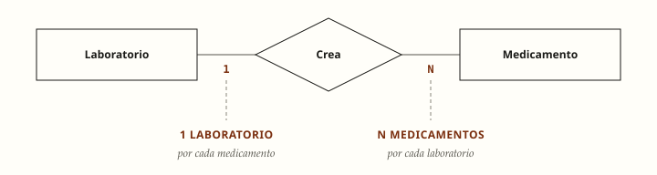

Lección 10 · Unidad 2 · Diseño conceptual
La razón de cardinalidad: dónde va el número
Escribir 1 y N en un DER es fácil. Ponerlos del lado correcto
y leerlos sin invertir el sentido es donde se pierden los puntos.
01La pregunta que responde una cardinalidad
Una relación en un DER dice que dos entidades están vinculadas. La cardinalidad dice cuántas. Y "cuántas" siempre se pregunta en una dirección concreta, nunca en abstracto.
Tomemos un requisito literal del TP1:
"Cada medicamento puede venir en muchas formas de presentación distintas, pero es producido por un único laboratorio."
Ahí hay dos preguntas separadas escondidas en una sola oración, y cada una tiene su propia respuesta:
- ¿Cuántos laboratorios produce un medicamento dado? → uno.
- ¿Cuántos medicamentos produce un laboratorio dado? → muchos.
Ese par de respuestas es la razón de cardinalidad. Se escribe
Laboratorio : Medicamento = 1 : N.
02Dónde se escribe cada número
Elmasri lo define en una línea: la razón de cardinalidad de una relación binaria
se especifica adjuntando 1, M o N a cada borde participante
.
Es decir, los números no van sobre el rombo — van sobre cada tramo de línea,
uno de cada lado.

1 está pegado a Laboratorio, y responde
"¿cuántos laboratorios por cada medicamento?". La N está pegada a
Medicamento, y responde "¿cuántos medicamentos por cada laboratorio?".
El número escrito junto a una entidad cuenta instancias de esa entidad, por cada una instancia de la entidad del otro extremo. Se escribe de un lado y se lee cruzado.
Por eso el orden importa al nombrarla. Laboratorio : Medicamento = 1 : N
y Medicamento : Laboratorio = N : 1 dicen exactamente lo mismo; lo que
cambia es cuál entidad nombrás primero. Si escribís la razón sin decir el orden,
no dijiste nada.
03La trampa: la notación (mín, máx) invierte los lados
Elmasri presenta una segunda notación, el par (mín, máx). Y no es un
formato distinto para lo mismo: se lee al revés.
El par pegado a una entidad E significa que para cada entidad e de E, e debe
participar en al menos mín y a lo sumo en máx instancias de relación
. O sea:
el par describe la participación de esa misma entidad, no la del otro extremo.
No se lee cruzado — se lee en el lugar.
El resultado es que los números aterrizan en lados opuestos según qué notación uses:
| Relación | Lado Laboratorio | Lado Medicamento |
|---|---|---|
| Razón de cardinalidad | 1 |
N |
| Notación (mín, máx) | (1, N) |
(1, 1) |
Ver un 1 de un lado y un (1,N) del mismo lado y pensar que
uno de los dos está mal. Los dos están bien: el 1 cuenta laboratorios
por medicamento, y el (1,N) cuenta en cuántas instancias de Crea
participa un laboratorio. Distintas preguntas, misma realidad.
La resolución oficial del TP1 (raw/Rta-TP-Farmacia.erdplus) usa
sólo razón de cardinalidad: cada conector trae maxCardinality
en One o Many, y minCardinality quedó en
Unspecified en los quince conectores. Entregá razón de cardinalidad.
El par (mín, máx) te sirve para entender, y para no marearte cuando lo veas en Elmasri.
04Práctica
Respondé antes de leer la explicación. Equivocarte acá y ver por qué es lo que hace que el concepto quede; leer la respuesta correcta de una no hace nada.
TP1: "Cada farmacia tiene sus propios empleados." Un empleado trabaja en una sola farmacia. ¿Cómo queda marcado el tramo de cada lado?
En Laboratorio —Crea— Medicamento, la N está escrita
del lado Medicamento. ¿Qué cuenta exactamente esa N?
Misma relación, ahora en notación (mín, máx) de Elmasri. Sabiendo que un laboratorio crea muchos medicamentos, ¿qué par va del lado Laboratorio?
05Un caso que sorprende
Del TP1, palabra por palabra:
"Por cada ciudad hay un único farmacéutico; es decir, si en una misma ciudad existe más de una farmacia, entonces el mismo farmacéutico estaría afectado a todas las farmacias de esa ciudad."
Pensá la razón de cardinalidad entre Ciudad y Farmacéutico antes de abrir. Escribila con el orden explícito.
Ver la respuesta de la cátedra
Ciudad : Farmacéutico = 1 : 1. En el archivo de resolución, la relación
Tiene lleva maxCardinality: One en los dos conectores.
La primera mitad la da el enunciado sin esfuerzo: "por cada ciudad hay un único farmacéutico". La segunda mitad no está escrita en ninguna parte — la cátedra asumió que un farmacéutico cubre una sola ciudad. Es una decisión de diseño, no una lectura del texto.
Eso es exactamente lo que Elmasri manda hacer: si no es posible determinar alguna
razón de cardinalidad o dependencia a partir de los requisitos, habrá que consultar
con los usuarios
. En un parcial no hay usuario a quien consultar, así que
declarás el supuesto al lado del modelo. Un supuesto escrito es defendible;
uno silencioso parece un error.
Elmasri & Navathe, Fundamentos de Sistemas de Bases de Datos, 5ª ed. —
sección 3.7.1 "Resumen de la notación para los diagramas ER" (pág. 69–71) y
sección 3.7.4 "Notaciones alternativas" (pág. 72).
Están en raw/Fundamentos-de-Sistemas-de-Bases-de-Datos.pdf,
páginas 95 a 98 del PDF.
Leé las dos secciones enteras: son cuatro páginas y cierran el tema. La Figura 3.14 es la tabla de símbolos completa — vale la pena tenerla a mano durante todo el cuatrimestre.
Soy tu profe acá. Si algo de esto no cerró, preguntame en el chat y lo desarmamos. Y si querés que te tire un enunciado nuevo para marcar cardinalidades, pedímelo — la práctica es lo único que lo fija.